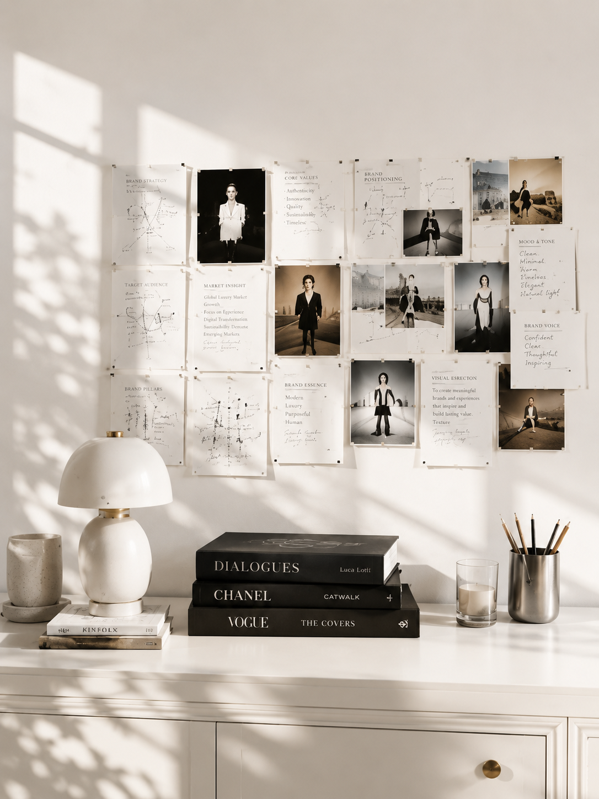

CULTURE & MEDIA DIVISION
以编辑内容、媒体平台与文化项目连接品牌和公众。
文化与媒体事业部围绕 C33 Magazine、ModeZine、编辑出版、文化内容与国际文化项目展开，形成兼具内容判断、传播资源与项目执行能力的文化媒体板块。
- C33 Magazine / 中法双语独立刊物
- ModeZine / 中文内容平台
- 编辑与出版 / 选题、采访与视觉内容
- 文化内容 / 品牌、艺术、设计与城市文化
- 国际文化项目 / 跨文化内容与线下合作
1M +全平台累计受众
890KModeZine 微博粉丝
164K +微信公众号订阅
100K +单篇最高阅读
PUBLICATION ID
C33 ISSN 2981-2844
由法国国家图书馆（BnF）法国 ISSN 中心正式分配的在线出版物国际标准连续出版物号。
BRAND & MEDIA NETWORK
合作、报道及项目网络节选
- Louis Vuitton
- Hermès
- Chanel
- Dior
- Giorgio Armani
- Celine
- Schiaparelli
- Bvlgari
- Roger Vivier
- Balenciaga
- Loewe
- Maison Kitsuné
- Carven
- AMI Paris
- Macallan
- Air China
- Tissot
- Urban Revivo
- Xiaomi
- OPPO
- 波司登
- JNBY
- Honor